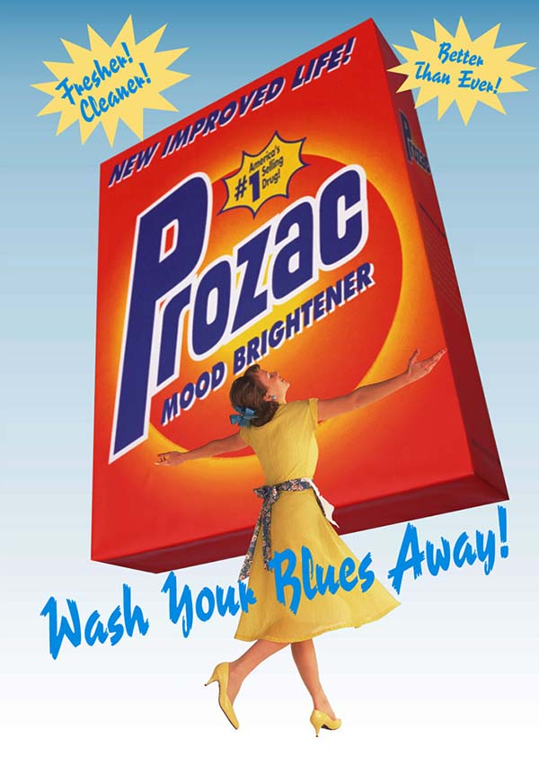

I slept with a ghost, and other stories in downmarket women's magazines
PERUSING Take A Break and its ilk in Tesco? Brace yourself for these utterly insane stories:
I slept with a ghost
If you've been on the fence as to believing whether ghosts exist or not, why not let a story about a care worker from Hull who thinks they made love to the spirit of a Victorian coal miner convince you? Rather than suggesting this person simply had some depraved sex dream, the magazine reports it as solid, unshakeable fact.
My husband is my brother
Without fail, there will be a story about a couple who are, in some way, related by blood. The gold standard is when they find some lunatic who met and married someone, discovered they were a long-lost sibling and decided to remain together. Even incest can't stand in the way of true love.My cat is Hitler reincarnated
This story will feature a photo of the owner solemnly holding up a white cat that has a patch of black fur on its upper lip. The only other evidence there is for this outlandish claim on is that the cat once scratched a gay friend of theirs. The only logical conclusion: it's the reincarnation of Hitler.My guinea pig is psychic
Psychic animals are always popular, as this story about a guinea pig that munches on lettuce just before a tragic incident occurs will demonstrate. No one points out that guinea pigs munch lettuce multiple times a day so it's all just a coincidence. That would be far too level-headed and reality-based.I farted for 100 hours
Rather than treating such a story with the hilarity it deserves, a red-top mag will report it very seriously and feature a picture of the farter looking sad and pointing at their bum. It's hugely embarrassing to admit to the nation that you have such a terrifying intestinal issue, but at least you've got £250 and something to show the grandchildren in years to come.